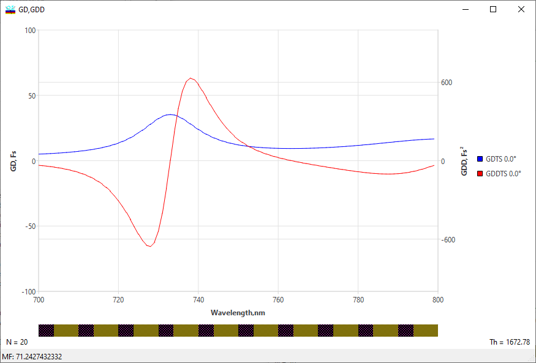

Group Delay and Group Delay Dispersion
Group Delay and Group Delay Dispersion
Navigation: OptiLayer Menu Commands > Analysis Menu >
Group Delay and Group Delay Dispersion
` <filter_mode.html>`__ ` <idh_menu_analysis.html>`__ ` <idh_ellipsometry_evaluation.html>`__
GD (group delay) and GDD (group delay dispersion) evaluation is a feature available in the Analysis menu under the Evaluation submenu. To start the evaluation process, you can click on the “GD & GDD” command from the Evaluation menu. This tool allows you to analyze and evaluate group delay and group delay dispersion for the given data or plot in the Evaluation window.

This Analysis tool allows you to assess Group Delay (the first-order derivative of the phase shift with respect to frequency) and Group Delay Dispersion (the second-order derivative of the phase shift with respect to frequency). Plots and axis settings can be adjusted using the Options command in the Analysis menu. These settings can also be accessed quickly via the right-click popup menu (refer to Evaluation).